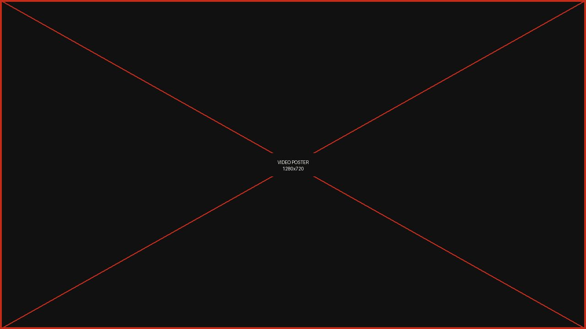

Capabilities
Four ways we work.
One standard.
Every engagement is built around the same question: will this hold up when someone who does not work here starts asking how it works?
Collaborate
Partnerships between companies, nonprofits, and community organizations that produce measurable outcomes.
Most corporate-nonprofit partnerships fail quietly. The company writes a check, the nonprofit sends a thank-you, and neither side can describe what changed. We design partnerships where both parties have something at stake and a defined result they are jointly accountable for.
- Partner identification and vetting
- Partnership structure and governance design
- Shared measurement frameworks
- Employee volunteer program design
- Community advisory board formation
Create
CSR and ESG programs designed around what your business actually does.
A responsibility program borrowed from a competitor will read as borrowed. We build from the operating model outward: where the company already has scale, expertise, or relationships that make a real difference, and where its footprint creates an obligation it has not yet met.
- Materiality assessment and stakeholder mapping
- CSR and ESG strategy development
- Program architecture and rollout planning
- Internal governance and ownership model
- Budget framework and resourcing plan
Report
Impact and ESG reporting built to be audited, not admired.
Investors, regulators, and B Lab assessors are all asking harder questions than they were five years ago, and a glossy PDF of smiling volunteers no longer answers any of them. We build reporting against recognized frameworks and we are direct about what cannot yet be measured.
- Annual impact and CSR report production
- ESG disclosure aligned to GRI, SASB, or TCFD
- B Impact Assessment preparation and support
- KPI definition and measurement systems
- Third-party verification readiness
Lead
Executive and board-level counsel for leaders who own this personally.
Social impact fails when it is delegated to a department with no budget authority and no line to the executive team. This work is for CEOs, boards, and senior leaders who intend to own the outcome — including the parts that are uncomfortable to say publicly.
- Executive advisory and strategic counsel
- Board education and presentation support
- Crisis and reputation guidance
- Leadership positioning and thought leadership
- Speaking engagements and workshops
Watch
Connection is the catalyst

Fit
Who this is for
We work best with organizations that have already decided responsibility matters and now need it to function — mid-market and enterprise companies, foundations, and mission-driven brands preparing for B Corp certification.
We are a poor fit for companies looking for a communications campaign to sit on top of an unchanged operating model. That work exists and other firms do it well.